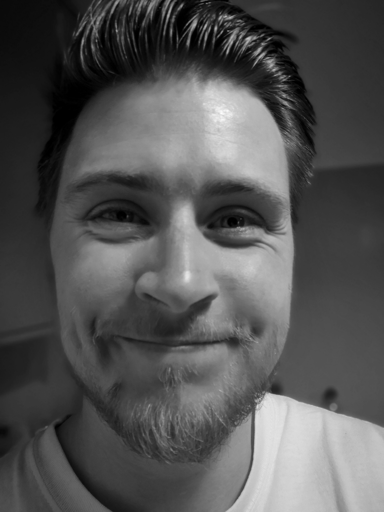

Tom Diviney - Curriculum Vitae

Hardwicke, Gloucester, GL2
E: thomasdiviney@hotmail.co.uk
T: 0742 609 5267
My Hobbies
Contact Me
Professional Summary
I am an experienced business professional with a demonstrated history of working within both in-house and
agency settings, in sectors including the student events market, animal welfare and private healthcare. I am also self-taught
in various coding languages, including HTML, CSS and Javascript with the aim to begin a career as a full stack web developer
I have direct experience building websites from scratch, on both custom web platforms and WordPress and have a foundational
understanding of HTML and CSS. Working alongside key stakeholders and web developers to ensure a successful on time launch,
with a focus on UI, UX and e-commerce. Alongside this I have experience maintaining sites, with an emphasis on SEO,
archiving blogs and copywriting, as well as monitoring GA for weekly performance, and actioning on going changes to improve
the user journey and increase trade.
Education
BA Hons in Business - 1st Class Honors
As a result of my strong performance during my time at Plymouth University, my name has been placed on the Faculty of
Business, Dean's List of Academic Achievement 2017
Modules included:
- Marketing Management
- Accounting and Finance
- Operations Management
Work Experience
Senior Marketing Campaign Officer - Mike Burton
Sports and Travel Marketing
March 2024 to present
- Managing the communications calendar for the Engand Rugby Travel, Lions Rugby Travel and EPCR Travel database
- England Rugby Travel database of 110,000 customers
- Lions Rugby Travel database of 240,000 customers
- Creation of emails and website landing pages
- Analysing email analytics; click through rates, engagement etc to refine our digial communications strategy
- Planning and plotting the marketing calendar for the business sub-divisions
- Working closely with internal and external stakeholders to deliver campaigns
- Internal teams include social media, web site content, designers, data analytics and content creators
- Building strong relationships with external suppliers
Senior Account Manager - The Crowd Agency
Student Marketing Agency
March 2022 to March 2024
- Manage a portfolio of well-known client accounts, acting as the first point of contact for ongoing campigns,
and responsible for the full management of end to end experiential marketing campaigns
- Clients include The Times, Qatar Airways, Pepsico, Burger King and Lee Kum Kee
- Establishing and maintaining trust-fulfilling relationships with the aim to grow clients renewals year on year
- Establish the needs and requirements of my clients, and deliver campaigns that hit on key metrics and KPIs
- Creating accurate reports on the status of existing accounts, KPI reports, wrap up reviews
- Manage the workload of my account executive; mentoring them to develop them within the business
Marketing and Website Coordinator - Naturewatch Foundation
Animal Welfare Charity
November 2020 to March 2022
- Responsible for the redesign, build and ongoing maintenance of the main charity websites
- Including front end design and WYSIWYG development, copywriting, search engine optimisation and PPC activity
- Working closely with managing director and campaign manager to promote the charity and the individual campaigns and grow the
number of supporters and donors
- Executing press releases, social media content and local in-person events